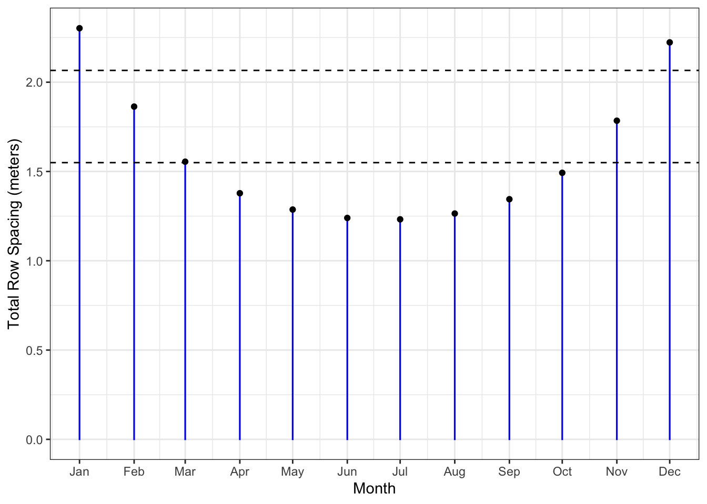

# Calculate the horizontal length of the panel
p_l <- 1.1 * cos(13 * pi / 180)
p_l # Display the horizontal length in meters[1] 1.071807When installing solar panels on a flat roof, one of the most important factors to consider is the spacing between rows of panels. This is to ensure that the shadow cast by one row does not fall on the row behind it, which would reduce efficiency. In this post, I will show how to use R to calculate the length of the shadow cast by solar panels and, therefore, the required spacing between the rows.

The first calculation we need to perform is the horizontal length of the solar panel, which depends on the panel’s tilt angle. The formula for the horizontal projection of a panel can be derived from basic trigonometry. Firstly, we need to find the side \(b\) of the triangle, which can be done using the following relationship:
\[ cos(A)=\frac{b}{c} \] where: - \(( A )\) is the tilt angle of the panel. - \(( b )\) is the horizontal length of the panel. - \(( c )\) is the height of the panel.
When isolating \(b\) we get: \[ cos(A)c=b \]
In this example, the height of the panel \(( c )\) is 1.1 meters, and the tilt angle \(( A )\) is \(( 13^\circ )\). The following R code calculates the horizontal length (note that we convert degrees to radians):
# Calculate the horizontal length of the panel
p_l <- 1.1 * cos(13 * pi / 180)
p_l # Display the horizontal length in meters[1] 1.071807Next, we calculate the shadow length \((d)\) cast by the panel, which depends on the angle of the sun \((\beta)\) and the panel’s vertical height:
\[ d = \frac{a}{tan(\beta)} \]
Where:
Using the property \(a=sin(A)\), we substitute:
\[ = \frac{sin(A)\cdot c}{tan(\beta)} \]
In order to find data on the sun angle I use the suncalc package. Here’s how to do it in R:
library(suncalc)
library(lubridate)
library(ggplot2)Here I use the first day of the month and noon as the time of day:
# Fetch sun's angle (altitude) for each month at noon
sunALT_df <- getSunlightPosition(
date = ymd_hm("2024/01/01 12:00") + months(seq(0, 11)),
lat = 55,
lon = 12,
keep = c("altitude")
)
# Convert altitude from radians to degrees
sunALT_df$altitude_deg <- sunALT_df$altitude * (180 / pi)
sunALT_df # Display sun angle data date lat lon altitude altitude_deg
1 2024-01-01 12:00:00 55 12 0.1984576 11.37078
2 2024-02-01 12:00:00 55 12 0.3029835 17.35968
3 2024-03-01 12:00:00 55 12 0.4733542 27.12120
4 2024-04-01 12:00:00 55 12 0.6791656 38.91332
5 2024-05-01 12:00:00 55 12 0.8552644 49.00304
6 2024-06-01 12:00:00 55 12 0.9740378 55.80826
7 2024-07-01 12:00:00 55 12 0.9958690 57.05909
8 2024-08-01 12:00:00 55 12 0.9091945 52.09300
9 2024-09-01 12:00:00 55 12 0.7364647 42.19632
10 2024-10-01 12:00:00 55 12 0.5315600 30.45614
11 2024-11-01 12:00:00 55 12 0.3341991 19.14820
12 2024-12-01 12:00:00 55 12 0.2117176 12.13053Now, we can calculate the shadow length for each month based on the sun’s angle and the height of the panel.
# Calculate the vertical height of the panel
a <- 1.1 * sin(13 * pi / 180)
# Calculate the shadow length for each month
d <- a / tan(sunALT_df$altitude)
d # Display shadow lengths [1] 1.2304344 0.7915535 0.4831113 0.3065175 0.2150786 0.1681121 0.1603308
[8] 0.1926801 0.2729304 0.4208164 0.7126426 1.1512404Finally, we add the panel’s horizontal length to the shadow length to get the total spacing required for each row of panels. We can visualize this spacing for each month of the year using a bar plot.
# Calculate total required row spacing
tot_w <- d + p_l
w_df <- data.frame(total_width = tot_w, month = sunALT_df$date)
# Calculate row spacing for 3 and 4 rows
row3 <- (7.27 - p_l) / 3
row4 <- (7.27 - p_l) / 4
# Plot the required row spacing for each month
ggplot(data = w_df, aes(x = as.Date(month), y = total_width)) +
geom_bar(stat = "identity", width = 0.1, color = "blue") +
geom_point() +
geom_hline(yintercept = c(row3, row4), linetype = "dashed") +
scale_x_date(date_labels = "%b", date_breaks = "1 month") +
labs(x = "Month", y = "Total Row Spacing (meters)") +
theme_bw()
In the plot, the dashed lines represent the spacing for 3 rows and 4 rows, allowing you to see how the shadow length changes throughout the year and how it affects the required spacing.
By following these steps, you can calculate the optimal row spacing for solar panels to avoid shading, ensuring maximum energy efficiency throughout the year.